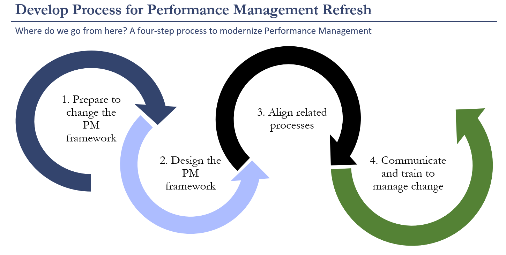

A strategic consulting project that revamped the existing performance management process at a small firm to enhance productivity and employee engagement.
The performance management process at my client was previously informal and lacked a structured approach, leading to inconsistencies in employee evaluations and engagement. My client recognized the need to enhance its performance management system to support its strategic objectives and drive higher productivity.
The implementation of the performance management process refresh was a strategic initiative undertaken with meticulous attention to detail. Our role as management consultants was to navigate the firm through the intricate journey of revamping their existing system. The project spanned several phases, starting with a diagnostic assessment of the current state, moving through a collaborative phase of stakeholder engagement and discovery, to the design and development of optimized processes. The initiative culminated with the careful selection of a technology vendor, followed by the tailored rollout of the new system. Integral to our approach was the establishment of a continuous improvement framework, designed to evolve the performance management system in alignment with the firm's ongoing growth and changing objectives.
The project led to a newly defined performance management process that was well-received and adopted across the firm.
